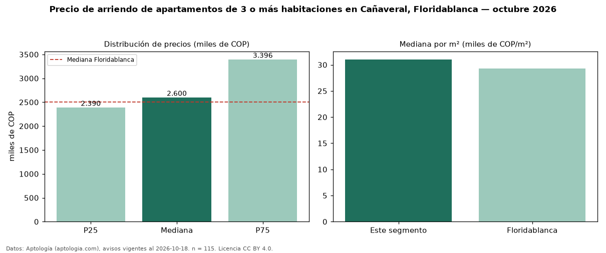

Precio de arriendo de apartamentos de 3 o más habitaciones en Cañaveral, Floridablanca — octubre 2026
Con 115 avisos vigentes, el canon mediano de apartamentos de 3 o más habitaciones en arriendo en Cañaveral, Floridablanca es COP 2,60 millones al mes. Prácticamente coincide con la mediana de Floridablanca para apartamentos de 3 o más habitaciones (COP 2,50 millones). Por metro cuadrado, la mediana es COP 31.034/m² al mes (n = 115 avisos con área), 6 % por encima de Floridablanca (COP 29.341/m²). Son 83 % de los 138 avisos de apartamentos en arriendo de la zona, cuya mediana general es COP 2,60 millones (+0 %). Con el precio por m² de venta del mismo segmento (COP 5,54 millones/m²), la rentabilidad bruta implícita es 6,7 % anual (aproximación con medianas de ofertas distintas). El área mediana anunciada es 88 m². La administración mediana declarada es COP 481.500 al mes (n = 88), aparte del canon. El estrato más frecuente es 5 (60 % de los avisos con estrato). Datos: Aptología (aptologia.com), CC BY 4.0 — https://www.aptologia.com/arriendo/floridablanca/canaveral. Archivos: PDF, CSV con las cifras y gráfica PNG.

| Avisos únicos | 115 |
|---|---|
| Percentil 25 | COP 2.390.000 |
| Mediana | COP 2.600.000 |
| Percentil 75 | COP 3.396.000 |
| Mediana por m² | COP 31.034 |
Fuente: avisos vigentes de portales inmobiliarios recopilados por Aptología, deduplicados (mínimo 30 avisos únicos por celda). Precios pedidos, no cerrados. Fecha: 2026-10-18.